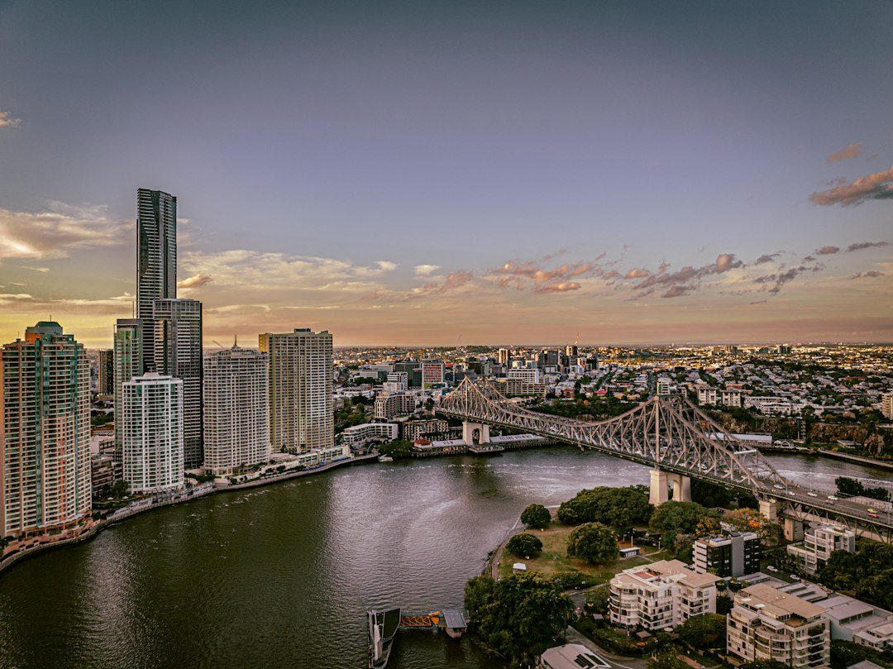

Brisbane business website budgets on the source page start at about $2,500 to $7,500 for a small brochure site, about $7,500 to $15,000 for a more polished lead-focused build, and higher for eCommerce or heavily custom work. Simple brochure projects are commonly 4 to 10 weeks, WordPress or small business sites 6 to 10 weeks, and eCommerce or custom builds from about 12 weeks to several months.
For Brisbane businesses comparing web design brisbane options, the useful starting point is not a style preference, but the job the site must do for customers, search visibility and enquiry flow.
Web Design Brisbane Explained
Web Design Brisbane Australia frames a business website as a search-ready asset built to turn visitors into enquiries, so the brief should begin with the work the site must win. For a Brisbane service business, that can mean clearer service pages, stronger local relevance, faster mobile loading and a contact path that feels low friction.
The published service mix includes custom design, small business websites, WordPress builds, Shopify and WooCommerce stores, website redesigns, landing pages, SEO-friendly web design and care plans. Those categories are useful because they separate different buying problems. A sole trader may need an editable brochure site. A retailer may need product trust and checkout clarity. A campaign may need a focused landing page for Google Ads.
- Define the conversion: enquiry form, phone contact, product sale, booking request or quote request.
- Define the content owner: decide whether your team will update WordPress pages or rely on a care plan.
- Define the search starting point: protect existing rankings if the project is a redesign.
Who this applies to
This guide applies to Brisbane and South East Queensland businesses planning a new website, a redesign, an online store, or a lead-generation landing page. It is most relevant when the site has to support search visibility and customer enquiries, not just provide a visual refresh.
The local detail matters when buyer intent changes by area or business type. The source page gives examples from the CBD and inner-city precincts through to Toowong, Indooroopilly, Chermside, Carindale and Sunnybank, but the stronger planning question is how customers compare services in those settings. A professional service near the CBD may need proof, speed and clear consultation pathways. A suburban trade or retail business may need service-area clarity and mobile-first contact options.
A useful brief should tell the designer what customers already ask, what suburbs or regions matter, which services create the best enquiries, and whether the existing website has rankings that should be preserved during a redesign.
Budget signals to clarify before quoting
The source page gives indicative Brisbane pricing, not a fixed offer. A small business brochure website commonly runs from about $2,500 to $7,500. A more polished lead-focused build sits closer to $7,500 to $15,000. eCommerce and heavily custom work start higher. That spread is normal because scope changes the work behind the visible pages.
Ask what is included in strategy, design, copy support, development, search foundations, mobile testing, launch support and training. The cost can also shift when a site needs product pages, payment setup, content migration, custom layouts, integrations or a careful redirect plan for an existing site.
The published approach includes indicative pricing up front and a website cost estimator before speaking to anyone. Treat that as a scoping aid. It should help you form a realistic range, then a proper quote should tie that range to page count, platform choice, content readiness and the level of custom design required.
Timing and content readiness
The published timeframes are practical planning ranges. A simple brochure site is commonly around 4 to 10 weeks. A WordPress or small business website is commonly around 6 to 10 weeks. An eCommerce or custom build can run from about 12 weeks to several months.
The most important timing variable named on the source page is how quickly content and feedback come back. A fast build still needs approved copy, images, service details and decision-makers who can review designs without long gaps. If the site must launch around a campaign, seasonal peak or relocation, lock the content responsibilities early.
- List the pages needed at launch.
- Gather existing brand assets, photography and service descriptions.
- Confirm who approves design, copy and final testing.
- Ask how redirects and rankings will be handled if replacing an old site.
For a redesign, speed should not come at the cost of search continuity. The source page specifically notes modernising an underperforming site without losing rankings already earned.
Build choices and ownership after launch
Platform choice should follow the business use case. WordPress is positioned as flexible and easy to update without keeping a developer on call. Shopify and WooCommerce are named for online stores that need fast loading, trust and conversion. Landing pages are framed around campaigns, launches and promotions.
Ownership is another practical filter. The source page says the website and domain stay yours, and that training is provided so you can update text, images and pages yourself. If your team does not want to manage changes, website care and maintenance plans are presented as the alternative, covering updates, backups, security and support after launch.
There is also a useful caution around search promises. The page says a well-built site can help through clean markup, fast load times and sensible on-page SEO, while ongoing ranking depends on competition and content. It also states that under Australian Consumer Law no one can honestly guarantee a specific Google position.
For a second independent overview of this topic cluster, see this Brisbane web design planning guide.
- Define the outcome. Write down the main action the website should create, such as an enquiry, sale, booking or campaign lead.
- Choose the project type. Match the brief to a brochure site, WordPress build, eCommerce store, redesign or landing page.
- Prepare content early. Collect service descriptions, images, product information and approvals before the build timeline starts.
- Check search handling. For redesigns, ask how existing rankings, page structure and redirects will be protected.
- Plan ownership. Decide whether your team will update the website after training or use an ongoing care plan.
| Project type | Best fit | Questions to ask |
|---|---|---|
| New website | A business without a useful current site, or a new offer that needs enquiry flow from launch. | What pages are essential, who will supply content, and which platform should the team manage later? |
| Website redesign | An ageing or underperforming site, especially where existing search rankings should be protected. | Which pages already rank, what must be redirected, and what content should be kept, improved or removed? |
| Landing page | A focused Google Ads, launch or promotion campaign. | What action should the visitor take, and how will the campaign measure enquiry quality? |
| eCommerce build | A Shopify or WooCommerce store requiring product trust and checkout clarity. | How many products are involved, what content is ready, and what support is needed after launch? |
Common questions
How much should a Brisbane small business budget for a website? The source page says a small business brochure site commonly runs from about $2,500 to $7,500, while a more polished lead-focused build sits closer to $7,500 to $15,000. eCommerce and heavily custom work start higher.
How long does a typical build take? A simple brochure site is commonly around 4 to 10 weeks. WordPress or small business sites are commonly around 6 to 10 weeks, and eCommerce or custom builds can take from about 12 weeks to several months.
Can the business update the site itself? Yes, the source page says editable platforms like WordPress are used and training is provided so text, images and pages can be changed without a developer. A care plan is presented as the alternative if the business prefers not to manage updates.
Can a designer guarantee Google rankings? The source page says a well-built site can help with clean markup, fast load times and sensible on-page SEO. It also says ongoing ranking depends on competition and content, and that no one can honestly guarantee a specific position under Australian Consumer Law.
This guide covers practical planning for Brisbane business websites, redesigns, landing pages and online stores using the supplied source details.